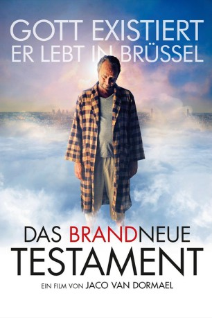

#3409 Das Brandneue Testament
 gesehen am 11.11.2016
gesehen am 11.11.2016
 
 IMDB-Wertung: 7.1 / 10
IMDB-Wertung: 7.1 / 10  Metascore: 70
Metascore: 70 
Gott ist ein Misanthrop, der zusammen mit seiner Frau und Tochter Ea in einer Plattenbausiedlung in Brüssel wohnt und seine Zeit damit verbringt, die Menschheit mit immer neuen Einfällen zu quälen. Lediglich sein Sohn JC hat den Absprung geschafft und sich unter die Menschen gemischt, um seine frohe Botschaft zu verbreiten. Eines Tages flüchtet auch Ea, um es ihrem Bruder gleich zu tun und sich sechs Apostel zu suchen, die ein brandneues Testament aufsetzen sollen. Zuvor zerstört sie den göttlichen Computer. Nicht ohne noch allen Menschen ihr jeweiliges Todesdatum per SMS zu schicken.
Jahr: 2015
Dauer: 115 Minuten
FSK: 12
Land: Belgien Studio: NFP Marketing & DistributionTonspuren:
Untertitel:
Auflösung: 1080p (1920x808) Größe: 3604 MB
Genre: Komödie, Fantasy
Regisseur: Jaco Van Dormael
Drehbuch: Thomas Gunzig, Jaco Van Dormael
Soundtrack: An Pierlé
Darsteller:
 Benoît Poelvoorde als Dieu
Benoît Poelvoorde als Dieu Catherine Deneuve als Martine
Catherine Deneuve als Martine François Damiens als François
François Damiens als François Yolande Moreau als La femme de Dieu
Yolande Moreau als La femme de Dieu- Anna Tenta als Xenia, l'Allemande
- David Murgia als Jésus Christ
 Johan Leysen als Le mari de Martine
Johan Leysen als Le mari de Martine- Jaco Van Dormael als L'automobiliste qui n'a plus que 0 seconde à vivre , uncredited
- Pili Groyne als Ea
 Laura Verlinden als Aurélie
Laura Verlinden als Aurélie Serge Larivière als Marc
Serge Larivière als Marc- Didier De Neck als Jean-Claude
- Marco Lorenzini als Victor
- Romain Gelin als Willy
 Johan Heldenbergh als Le prêtre
Johan Heldenbergh als Le prêtre- Gaspard Pauwels als Kevin
- Bilal Aya als Philippe
- Dominique Abel als Adam
- Lola Pauwels als Eve
- Sandrine Laroche als Catherine
- Louis Durant als Marc, 9 ans
- Jean Luc Piraux als Le père de Willy
- Anne-Pascale Clairembourg als La mère de Willy
- Alice van Dormael als Journaliste
- Caroline Lambert als Journaliste
- Jérôme Varanfrain als Journaliste
- Aïssatou Diop als L'infirmière
- Armand Van Dormael als Le nonagénaire
- Viviane de Muynck als La mère de Georges
- Pascal Duquenne als Georges
- Hervé Sogne als Le chef des loubards
- Kody Kim als L'homme qui vivra le plus longtemps
- Besnik Limani als Le sans-papiers
- Michèle-Anne De Mey als Andrée
- Jean-François Wolff als Médecin Willy
- Norbert Rutili als Le généticien
- Luc Schiltz als Médecin hôpital
- Harry Cleven als Passant micro-trottoir
- Jean-Henri Compère als Musicien hélicon
- Tom Audenaert als Maquettiste
- George Nixon als Clochard métro
- Ivone Semedo als Maman hôpital
- Christian Magnani als Publicité pompes funèbres
- Tom Canivet als François, 8 ans
- Clara Gunzig als La cousine de François
- Agathe Eleanor Masson als La fille des Allemands
- Nora Young als Aurélie enfant
- Anne-Marie Loop als Femme wasserette
- Fabien Zeimes als Jean-Claude enfant
- Gabriel Boisante als Ambulancier
Datei: X:\2015(A-F)\Brandneue Testament, Das (2015, FSK12, 1920x808).mkv seit 01.04.2016
Festplatte: HD 2015(A-Z)
 Es gibt insgesamt 143 Filme in der Gruppe '2015(A-F)'
Es gibt insgesamt 143 Filme in der Gruppe '2015(A-F)'